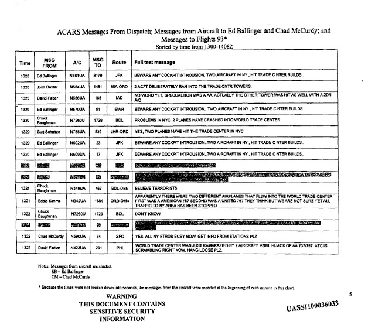
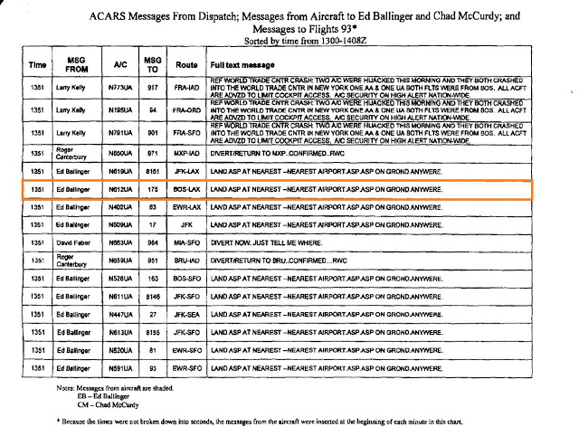
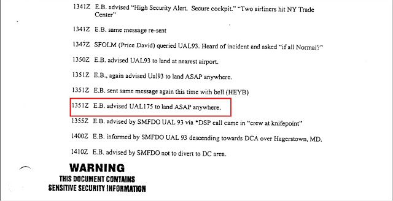
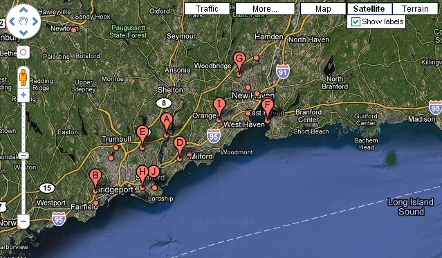
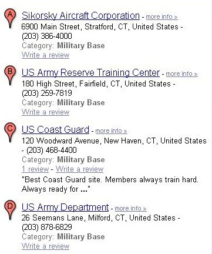
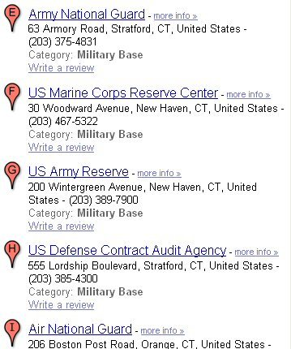

United Airlines 'Flight 175' - "An Independent Analysis"
Saturday, 15 February 2020Firstly, I would like to thank Julia Ratsey and 'Conspiracy Cuber' for their help and support. Also, I would to thank Andrew Johnson, Richard D. Hall and Chris Hampton for their support of my research.
United Airlines “Flight 175” (UAL 175) was a scheduled domestic passenger flight from Logan International Airport, in Boston, Massachusetts, to Los Angeles International Airport, in Los Angeles, California.
On September 11th 2001 UAL 175 was scheduled to depart at 08:00 a.m. for Los Angeles. Allegedly fifty-one passengers and the five hijackers boarded the 767 through Terminal C's Gate 19. The plane pushed back at 07:58 a.m. and took off at 08:14 a.m. from runway 9. It is estimated that UAL 175 was hijacked between 08:42 a.m. and 08:46 a.m. while American Airlines “Flight 11” (AAL 11) was just minutes away from hitting the North Tower. We are told the hijackers forcibly breached the cockpit and overpowered the pilot and first officer, allowing lead hijacker and trained pilot Marwan al-Shehhi to take over the controls. Unlike AAL 11, which turned its transponder off, the aircraft's transponder was visible on New York Center's radar, and the aircraft deviated from the assigned flight path for four minutes before air traffic controllers noticed these changes at 08:51 a.m. EDT. Several unsuccessful attempts to contact the cockpit were made by Air Traffic Control. Allegedly, several passengers and crew aboard made phone calls from the plane to family members and provided information about the hijackers and injuries suffered by passengers and crew. At 9:03 a.m. the aircraft crashed into the South World Trade Center Tower.
Discrepancies in the "official" wheels-off time of UAL 175.
In the Bureau of Transportation Statistics (BTS) database, it reveals a discrepancy regarding the "wheels-off time" of UAL 175. (This is the moment when the plane lifts off from the runway). The BTS records a wheels-off time of 8:23 a.m., which differs from the "official" narrative wheels-off time, which is 8:14 a.m. The BTS database reveals that the tail number of the airplane that took-off at 8:23 a.m. was N612UA. This was UAL 175. Yet in contradiction we have Air Traffic Control (ATC) communications indicating that UAL 175 took-off at 8:14 a.m. This leaves no proof that the plane that took-off at 8:14 a.m. was tail number N612UA. Some people have tried to suggest this was an information inputting error which created this discrepancy? The take-off at 8:14 a.m. is also confirmed and supported in the ATC Pilot radio transcripts and radar data. This leaves an obvious question to ask. What about the 8:23 a.m. take-off?
To learn more we need to understand how the information was being generated. The wheels-off time is triggered automatically by a mechanical sensor switcher when the airplane loses contact with the ground. The data is then sent automatically to the airline via the ‘Aircraft Communications Addressing and Reporting System’ (ACARS), and then the airline forwards the data to the BTS on a regular basis. Ostensibly, no human intervention is involved, thus no human failure is possible. The fact that the gate departure of 7:58 a.m. coincides with the "official" narrative suggests that the data is valid.
Interestingly, an eyewitness for the 8:23 a.m. “unofficial” take-off time is a pilot named Steve Miller. He was the First Officer on US Airways 6805, which departed directly after UAL 175. Lynn Spencer, the author of the book “Touching History”, interviewed Miller for her book. Miller meticulously described how he and his Captain Ron Maxwell were waiting for the departure of United Airlines “Flight 175” as they were the next in line. Quoting from the book below:
“On the taxi-out in Boston, they (the pilots of US Airways 6805) waited at the runway's hold-short line, where Miller looked up to watch a United Boeing 767 take off, United Flight 175. The final weight and balance calculations from dispatch came over the ACARS at 8:05, and with that in hand, the crew was ready to fly. Wide-body aircraft produce especially powerful wingtip vortices - horizontal, tornado-like winds off the ends of the wings - which require time to dissipate before other aircraft can take off, so he waited the required three minutes after United 175 departed before he received his take off clearance”.
One must consider, does this suggest that a UAL 175 took-off at 8:14 a.m. and another "UAL 175" took-off at 8:23 a.m. especially when we bear in mind US Airways 6805's First Officer Miller's account, who was next in line behind UAL 175 to take-off from the runway, and also the "official" BTS data with tail number N612UA (which is UAL 175) taking-off at 8:23 a.m.
When cross-referencing the BTS database, it revealed that USA 6805 had a wheels-off time of 8:28 a.m. Miller explicitly described waiting three minutes before getting take-off clearance, adding time for the time span between take-off for clearance and actual wheels-off, indicating UAL 175 must have lifted-off the runway around 8:23-8:24 a.m. which makes it inconceivable that Miller observed an airplane that took-off at 8:14 a.m.
The question that must be considered is. Did Miller see a different United Airlines airplane? This appears unlikely, after searching the BTS database for other United Boeing 767's it returned no results for the relevant time. There is a slim possibility that a non-domestic United Boeing 767 took-off then, because the BTS database only lists domestic flights, however Miller himself says it was UAL 175, so either he overheard the flight number when taxiing out, or for someone like Miller who was frequently flying from Boston Logan (as he says) was familiar with the wide-body planes departing at that time.
UAL 175 was pushed back from the gate at 8:01 a.m. and according to the "official" story, and the BTS record log. However the "wheels-off time" (when it lifted-off the runway) is different. The "official" narrative says it was 8:14 a.m., which is backed by the ATC transcripts. The BTS says 8:23 a.m., which makes a huge nine minutes discrepancy.
The FAA's report has UAL 175 at 19,000 feet at 8:23 a.m. and is visually identified by AAL 11's pilot at 8:35 a.m. The 9/11 Commission Report states that "United 175 pushed back from its gate at 7:58 and departed Boston Logan Airport at 8:14. By 8:33 it had reached its assigned cruising altitude of 31,000 feet.
This document states that UAL 175 "departed" at 8:14 a.m. Reference: FAA report, Executive Summary, Chronology of a Multiple Hijacking Crisis, September 11, 2001, Sept. 17, 2001 [Referenced Chapter 1, The 9/11 Commission Report, "We Have Some Planes," footnotes 40, 41] (page 1 of 3)
A more detailed FAA document that states that UAL 175 began its take-off roll at 8:14 a.m. and that at 8:23 a.m. UAL 175 established radio contact with Boston Air Route Traffic Control Center (ZBW). "Boston, morning, united one-seventy-five out of one-nine (nineteen thousand feet) for two-three-zero” (twenty-three thousand feet).
The document continues that sometime after 8:23 a.m. UAL 175 was instructed to climb to 31,000 feet, and that at 8:40 a.m. UAL 175 radioed that it was at 31,000 feet.
FAA report, Summary of Air Traffic Hijack Events: September 11, 2001, Sept. 17, 2001 [Referenced Chapter 1, the 9/11 Commission Report, "We Have Some Planes," footnote 44]
http://www.gwu.edu/~nsarchiv/NSAEBB/NSAEBB165/faa7.pdf (Page 12 of 59).
Another reason this time is important and has become more apparent, is from reading the (FAA) Report on the Aircraft Accident about AAL 11
At page 3 of 4, the report states that UAL 175 made visual contact with AAL 11 and verified AAL 11's altitude at 8:38 a.m. (12:38 Universal Time). This would not have been possible if UAL 175 left the ground at 8:23 a.m. as the BTS data says, rather than at 8:14 a.m. as the FAA states and the 9/11 Commission say, because UAL 175 would have been 50 miles or more east of AAL 11's reported flight path.
Another interesting note is, New York Center’s air traffic controller, Dave Bottiglia takes over monitoring the flight from Boston Center controller John Hartling. UAL 175 waits nearly 45 seconds to check in with Bottiglia. According to author Lynn Spencer, this is “rather long, and Bottiglia is just about to call the airplane.” But then Captain Victor Saracini, the pilot of UAL 175, makes radio contact, saying, “New York, United 175 heavy.” Spencer, 2008, pp. 36
Also, UAL 175 stopped transmitting its transponder signal. It is currently flying near the New Jersey-Pennsylvania border, however the transponder is turned-off for only about 30 seconds and then comes back on as a signal that is not designated for any airplane on this day. Then, within the space of a minute, it is changed to another new code, however New York Center’s air traffic computers do not correlate either of these new transponder codes with UAL 175. Consequently, according to an early FAA report, “the secondary radar return (transponder) indicating aircraft speed, altitude, and flight information began to coast and was no longer associated with the primary radar return.” Therefore, while controllers are able “to track the intruder easily, they could not identify it.” 9/11 Commission, 8/26/2004, pp. 21
Emergency Locator Transmitters (ELT) Discrepancies with UAL 175
Emergency Locator Transmitters (ELTs) are emergency transmitters that are carried aboard most general aviation aircraft in the U.S. In the event of an aircraft accident, these devices are designed to transmit a distress signal on 121.5 and 243.0 MHz frequencies. ELTs are mounted aft in the airplane, and designed to be triggered upon impact or may be manually activated using the remote switch and control panel indicator in the cockpit. Activation of the ELT triggers an audio alert, and 406-MHz ELTs transmit GPS position for search and rescue. [Emergency Locator Transmitters – AOPA].
As UAL 175 “allegedly” hit the South Tower of the World Trade Center at 9:03:11 a.m. an ELT should have been activated, however an ELT was activated in the New York area several minutes before the “alleged” airplane hit the South Tower. UAL 175 “allegedly” transmitted an ELT signal on 121.5 megahertz, which is an emergency frequency that ELTs are designed to transmit their distress signals on, at just before 8:58:28 a.m. , which is over four minutes before the UAL 175 crashed. The pilot of Flight 583, who had reported the ELT signal before the North Tower was struck, told David Bottiglia at the New York Center that he had noticed another ELT going-off. The pilot said, "I hate to keep burdening you with this stuff, but now we're picking up another ELT on 121.5."
https://www.scribd.com/document/17336462/T8-B8-Miles-Kara-Docs-3-Timelines-Fdr-Team-8-Tab-Hunt-for-AA-11-After-WTC-1-Hit-951 (Pg. 7 of 11)
Although an ELT went-off minutes before UAL 175 hit the South Tower, it seems that no ELT went-off at the time of the crash itself at 9:03:11. This “official” evidence confirms an ELT going-off at 8:58:28 a.m. which is four minutes before the “official” crash of UAL 175. Does this “official” evidence suggest UAL 175 did not crash into the South Tower at 9:03:11 a.m.? Clearly the South Tower had not been struck by any plane at this time, so it could not have been UAL 175.
What does the radar evidence indicate?
When studying the radar data it appears to show that UAL 175 (transponder code: 3321) did not deviate off-course and fly towards New York, as asserted in the “official” narrative. UAL 175 appears to continue its flight path. However UAL 1523 appears to fly close-by and merges with UAL 175. UAL 1523 appears to take the route that is attributed to UAL 175, heading towards New York? This is also supported by ACARS data, indicating UAL 175 did not deviate and head towards New York.

In the set of images below, you can observe UAL 1523 converging with UAL 175, showing UAL 1523 appearing to deviate and head towards New York. See below:


What does the ACARS data indicate about UAL 175?
Aircraft Communications Addressing and Reporting System (ACARS) is a device used to send messages to and from an aircraft. Very similar to text messages and email we use today, Air Traffic Control, the airline itself, and other airplanes can communicate with each other via this "texting" system. ACARS was developed in 1978 and is still used today. Similar to cell phone networks, the ACARS network has remote ground stations installed around the world to route messages from ATC and the airline, to the aircraft depending on its location and vice versa.
ACARS Messages have been obtained through the ‘Freedom of Information Act’ (FOIA) which demonstrated that the aircraft received messages through ground stations located in Harrisburg, Pennsylvania, and then later routed through a ground station in Pittsburgh, 20 minutes after the aircraft “allegedly” impacted the South Tower in New York.

The “official” ACARS data does not support that UAL 175 deviated off course and flew back towards the New York area and then crashed into the South Tower. Instead the ACARS data messages show UAL 175 continuing its flight path and registering two “received” ACARS messages by the plane at 8:59 a.m. and 9:03 a.m. in Harrisburg, Pennsylvania which is in the opposite direction to New York.
The image below it shows the first ACARS message received at 8:59 a.m. as UAL 175 is “allegedly” flying towards the South Tower in New York.

The image below shows the second ACARS message received by the plane at 9:03 a.m. as UAL 175 is “allegedly” about to crash into the South Tower in New York at 9:03 a.m.

The image below shows a third ACARS message which was sent to UAL 175 located from Pittsburgh ACARS ground station at 9:23 a.m. The 9/11 Commission omitted whether or not this ACARS message was received by the plane. Why did they omit this information? It is more than likely it was received by the plane based on the previous two messages showing that the plane was travelling in that direction away from New York area, which is why the ACARS ground stations were sending the messages from those ACARS ground station locations.

Based on Flight Tracking protocol, the only reason the Central Processing System would choose to route messages through the ground stations located at Harrisburg (MDT), and then later Pittsburgh (PIT), over the numerous ground stations much closer and surrounding NYC, is due to the aircraft being in the vicinity of MDT, and then later, PIT. This means that the airplane observed to strike the South Tower at 9:03a.m. was not UAL 175. So, if UAL 175 was somewhere over in Pennsylvania when the airplane was observed to strike the South Tower, and a standard 767 cannot perform at such excessive speeds as reported, then where did the plane come from which was observed to strike the South Tower?
Further corroboration comes when an ARINC Expert was contacted in San Francisco. When told about the ACARS message being routed through PIT after the airplane had already “allegedly” crashed into the South Tower, this is what she had to say:
"There is no way that message would be routed through Pittsburgh if the airplane crashed in New York City"
The 9/11 Commission didn't confirm or mention in the report if the 9:23 a.m. ACARS message to the airplane was received, after the two last known ACARS message at 8:59 a.m and 9:03 a.m. messages were received by the airplane. The 9/11 Commission ostensibly omitted, and avoided this specific point. If the ACARS message sent at 9:23 a.m. to the airplane was received by the airplane after the “alleged” crash at 9:03 a.m. this would be seriously very damaging for the "official" narrative of UAL 175, if indeed the 9/11 Commission confirmed the 9:23 a.m. ACARS messages had been received by the airplane.
As I have pointed out, it is an “officially” recognised fact that flight dispatcher Ed Ballinger, United Airlines in command for all East to West coast flights on the morning of 9/11, sent an "uplink" ACARS message to United Airlines 175 at 9:23 a.m. routed through an ACARS ground station in Pittsburgh twenty minutes after the “alleged” crash of UAL 175 into the South Tower. Not only from the logs from the print-out of United Airlines ACARS record log from Ballinger's desk, as provided by Ballinger himself to the 9/11 Commission and eventually released in 2009, and addressed by Team 7 during Ed Ballinger's interview on April 14, 2004 in Washington, DC. Unknown to many people (including myself until now) Ballinger sent a subsequent ACARS "uplink" message to UAL 175 at 9:51 a.m. which is 48 minutes after UAL 175 had "officially" crashed in New York, and 28 minutes after the previous ACARS message sent to the airplane at 9:23 a.m. This information is contained in the “official” record, released through a FOIA in 2009 called:
The 2009 FOIA document contains a chart of messages to and from United Airlines airplanes from 13:00 to 14:08 UTC, including UAL 175 and UAL 93. Unlike the Printout of ARINC logs released December 2011, this document clearly reports the stamp "WARNING: THIS DOCUMENT CONTAINS SENSITIVE SECURITY INFORMATION" on each of the 66 pages, as required by the ‘Department of Homeland Security’, and in particular the ‘Transportation Security Administration’ under 2003 CFR Title 49, Volume 8.

{kind=link}
The fact that all "downlinks" (i.e. air-to-ground messages sent from airplane to dispatchers) appear as unreadable or hardly readable, for some unspecified reason, these rows were apparently marked with a yellow highlighter or a similar tool in the original paper record, as confirmed by the warning notes "Messages from aircraft are shaded" reported on each page. As known, shaded text portions have a very bad rendering once xeroxed or scanned. As a result, the downlink rows in the chart are probably well readable in the original paper version, but in the PDF publicly available they appear as they were "masked out". In some cases, it is possible to read the UTC time, the flight number, the tail number, the targeted dispatcher (EB = Ed Ballinger or CM = Chad McCurdy), the route and at least part of the text message behind the highlighting. In other cases, it is completely impossible to figure out the text behind the dark shade.
Another surprising aspect of this document is the fact that the timeline ends at an abnormal and unusual time of 14:08 UTC (10:08 a.m. EDT). As widely known to many ACARS researchers, seven uplink messages were sent out from United Airlines dispatchers to United 93 between 14:10 UTC (10:10 a.m EDT) and 14:20 UTC (10:20 a.m. EDT) in messages: 18 - 25 in Winter's list and therefore they are not reported in this document. While there is still fierce debate as to whether which messages were received by the airplane, it is an ascertained and unquestionable fact that they were sent. Furthermore, I would expect that the timeline would end at least at 14:30 UTC (10:30 a.m. EDT), if not later, so that all messages related to UAL 93 would be included in the chart. Strangely, messages to and from other United airplanes of secondary importance were included in this table, but for some unknown reason the last seven messages to UAL 93, one of the four airplanes involved in 9/11, were not. The fact that the timeline ends at an unexpected time such as 14:08 UTC, (10:08 a.m. EDT) along with the exclusion of messages to UAL 93 which are of vital importance for the ACARS research on 9/11, is very suspicious indeed.
In spite of all the redactions and missing data, this document uncovers information of importance for the purposes of ACARS research at page 48: at 13:51 UTC (9:51 a.m. EDT) Ballinger sent a bunch of uplinks (the same messages) to several United airplanes, including UAL 93 and UAL 175 saying - "LAND ASP AT NEAREST -- NEAREST AIRPORT.ASP .ASP ON GROUND.ANYWERE". Also sent to Flight 8151, 63, 17, 163, 8146, 27, 8155, 81 and 161, and in some cases twice to the same airplanes within the same minute, see pages: 48 and 49.

{kind=link}
The existence of the 9:51 a.m. ACARS message further strengthens the case that UAL 175 was still airborne after the alleged crash into the South Tower at 9:03 a.m.

{kind=link}
Some questions to consider…
If UAL 175 had crashed at 9:03a.m. why did the airplane still appear as "confirmed" in Barber's log at 9:20 a.m.?
Why did Ballinger send another ACARS message uplink to UAL 175 at 9:51 a.m. 48 minutes after the alleged crash, and 28 minutes after sending the previous ACARS message uplink which ostensibly did not produced any “Failure Report” and also 27 minutes after being officially notified about the crash by Andy Studdert? Why would Ballinger urge an airplane already declared as 'crashed' to land at the nearest airport?
Why does the log for the ACARS message uplink, sent by Ballinger to UAL 175 at 9:23 a.m. show two time-stamps, although 20 minutes had already elapsed since the time of the alleged crash? After twenty minutes from the crash, the ARINC CPS would react with a ‘Reason Code 231’ (see for example the first ICPUL block for American 77 at 10:00 a.m. 22 minutes after the alleged crash against into the Pentagon), what would result in a ‘Failure Report’ on Ballinger's printer/screen and a log with one time-stamp only, such as the last message sent to UAL 93 at 10:21 a.m.
Finally, how could a dispatcher with 44 years of experience and a professional career possibly overlook a ‘Failure Report’ and keep on trying to contact his airplane for almost one hour after the alleged crash time, if he hadn't some information that led him to conclude that the airplane was in fact not "lost"? The whole UAL dispatch in Chicago was focused on both United airplanes which were considered hijacked. How could possibly all of them miss a ‘Failure Report’ in their logs?
The question arises why did the 9/11 Commission not bother to address this specific log during Ballinger's interview on April 14, 2004. Why is this log missing in the UAL record of Ballinger's logs, released in 2009 under FOIA? Why are several pages from that document missing? Why are the logs for United Airlines ‘Flight 175’ completely missing in the so called "Printout of ARINC logs" made public in December 2011?
As I have pointed out earlier in my blog post, confirmation of the ACARS messages being sent to UAL 175 at 9:23 a.m. and now 9:51 a.m proves that UAL 175 was still airborne. The fact that the details of whether or not the ACARS messages were received by UAL 175 (evidence suggests they were) would have caused a major problem for the 9/11 Commission if this evidence would have come to light and made public. So it is my own belief the 9/11 Commission omitted this vital information instead.
Now that I have established the possibility that UAL 175 could’ve been still airborne after the "alleged" crash into the South Tower is there any supporting evidence which could prove what the ACARS data is indicating?
'Flight Explorer' & MS-NBC News Coverage - UAL 175 Still in the air after the “alleged” crash
Supportive evidence does indeed exist showing that UAL 175 was still airborne which inadvertently come to light during MS-NBC’s live news broadcast coverage on 9/11 at approximately at 10:25 a.m. one hour twenty-two minutes after UAL 175 was "alleged" to have crashed into the South Tower.
In the MS-NBC news coverage they refer to a “real-time” software program called 'Flight Explorer' tracker whereby during the live news broadcast the cursor hovers-over different planes being displayed on the ‘Flight Explorer’ live screen feed, which displays information about airplanes which are still in the air-space relayed from the FAA Radar System. As they hover-over one of the planes it displays an information text-box which appears next to the plane, displaying identification information which indicates UAL 175 was still flying in the air at 10:25 a.m. It shows the departure - BOS and Arrival LAX, clearly indicating that UAL 175 was still in the air flying after it was reported later as being the plane involved which had crashed into the South Tower at 9:03 a.m. UAL 175 appears to be flying away from the New York area and flying over by Connecticut?

In the above image UAL 175’s departure from BOS (Boston) is 08:15a and Arrival at LAX (Los Angeles) is 01:44p.

Some researchers have suggested it was not ‘UAL 175’ in the text box graphic, due to the low quality in the video and is possibly ‘UAL 179’ instead. After carefully checking the BTS data base there was no reference to UAL 179 that took off from Boston on 9/11. The BTS does show 171, 173, 175, 177 as 170's go. The only one's going to LAX were 175 and 177. I downloaded the video and run it through Windows Movie Maker to slow it down and look at the frames, and it can be positively be identified as UAL 175 not UAL 177, along with other corresponding information relating to UAL 175’s schedule that day. I also inverted the colour format for further analysis below.

It has also been suggested that “false” blips could account for the ‘Flight Explorer’ evidence due to training exercises going-on that morning where “false” radar blips were inserted into the Air Traffic Controllers screens as part of the terror war-games training exercises on 9/11. However all "false" radar blips were removed from Air Traffic Controllers screens before 10:00 a.m. so this could not have been the result of a “false” radar blip. Also, after the second airplane crashed into the South Tower the FAA ordered a nationwide grounding of all planes around 9:45 a.m. and this news broadcast aired just before the North Tower was destroyed at 10:28 a.m. The ‘Flight Explorer’ shown on the screen could not possibly be from before 9:03 a.m. due to the lack of plane icons on the screen.
UAL 175’s “official” radar flight path does not correspond with any position location in the MS-NBC news coverage, which is an “official” live feed from the FAA radar system, so this can rule-out any real-time delays. Furthermore, UAL 175 was located north-west of Connecticut in the “official” radar positioning when departing from Boston Logan International (BOS) for Los Angeles (LAX) when deviating towards New York. The MS-NBC radar position has UAL 175 more south-west of Connecticut one hour twenty-two minutes after the “alleged” plane crash.
ABC News broadcast at 11:32 a.m. UAL 175 still unaccounted for?
United Airlines were concerned about a further flight that apparently was still missing, UAL 175. It is a Boeing 767. It was scheduled from Boston to Los Angeles. That flight apparently is still unaccounted for, according to officials from United.” (ABC, 9/11/01 11:32 a.m.)
Original source video http://www.archive.org/details/abc200109111118-1159 (Forward to 14:29 minutes)
Lisa Stark-Aviation Correspondent:
"United are also saying that a further flight that apparently is still missing, Flight 175, it is a Boeing 767, it was scheduled from Boston to Los Angeles....that flight is still unaccounted for according to officials from united .......so we believe there is at least 1 more plane that may still be flying around in US airspace."
Peter Jennings-NBC News Anchor:
"How is united flight 175 thought to be missing and unaccounted for?"
Lisa Stark:
"All united are saying is that they are quote "concerned" about that flight...what I believe is that probably that flight was hijacked as well, where it is right now...I am sure the FAA, the FBI and those folks know where it is ...we are not being told, but there may still be another plane flying out there that has not yet crashed or landed or whatever will happen to it....but that flight is apparently unaccounted for at this time as far as the public believe, I am sure someone knows where that flight is."
If UAL 175 was still in the air one hour twenty-two minutes after it “allegedly” crashed into the South Tower, why was it still in the air? Clearly it was en-route to somewhere, the question is where? A possibility to explore is, UAL 175 heading back to Boston Logan International Airport to be grounded, as the plane’s flight path appears to indicate this.


From close-up inspection of the ‘Flight Explorer’ screen shot (inset), it shows the direction which UAL 175 appears to be flying, indicating a route towards Boston Logan International Airport, the original departure airport of UAL 175. The plane’s location on the ‘Flight Explorer’ map is only about 160 miles approximately from Boston Logan International Airport. See below:

Flight Explorer shows UAL 175 at an altitude of 31,000ft, so it doesn’t appear that UAL 175 was descending to be grounded at any military bases along that corridor flight path. See below:

{kind=link}

{kind=link}

{kind=link}
If UAL 175 was heading back to Boston Logan International Airport to land, is there any information or evidence which could indicate that this happened? Perhaps Boston Center could provide insight into the events in the Boston airspace where UAL 175 appeared to be heading.
At 10:34 a.m. John White, manager at the FAA’s Command Center, reports that the Boston Center “has received a threat,” and is “going down to skeleton staffing.” [9/11 Commission, 11/4/2003] A 10:52 a.m. entry in the log of the FAA headquarters’ teleconference will state that the Boston Center is “evacuating the building.” [Federal Aviation Administration, 3/21/2002]
The FAA’s New England regional office in Burlington, Massachusetts, calls the Boston Center and reports that an “unidentified” aircraft is heading for the facility. In response to this potential threat, managers at the Center immediately order the closure and evacuation of their building. They also declare an “ATC zero,” which shuts down the Boston Center’s airspace shortly after 10:20 a.m.
The first news outlet to mention that UAL 175 had crashed was NBC, minutes before noon. (Until 11:30 a.m. they only had three confirmed flights that had been involved in 9/11).
CNN states on September 12, 2001 that United Airlines confirmed at 11:59 a.m. that Flight 175 had crashed. (The other three flights had been already confirmed long before).
Interestingly, CNN source only states at 11:59 a.m. the fact that UA 175 crashed but no announcement of the location. It took United Airlines three hours to confirm that UA 175 had crashed but they never announced where it crashed. The first one to announce that UA 175 crashed into the WTC is NBC but they don't quote United Airlines. And ABC needed till 4:00 p.m. to be sure that it wasn't AAL 77.
Why for many hours say it's AAL 77 that crashed into the WTC? Why did it take so long to confirm that UAL 175, although it should have been the easiest one to confirm? Why did United Airlines never confirm the WTC as location? So at least three hours after UAL 175 allegedly crashed into the South Tower, and being no mystery to the controllers, United Airlines still has no clue where this airplane is.
The 9/11 Commission Report states: 9:20 UA headquarters aware that Flight 175 had crashed into WTC (p. 32). Unfortunately this is simply not correct. While confirmation that AAL 11, UAL 93 and AAL 77 crashed, United Airlines seemed to be having problems ascertaining what was going-on with UAL 175. As seen in the ABC News Special Report at 11:32 a.m. United Airlines was certainly not aware at 9:20 a.m. that UAL 175 had crashed into the WTC as the 9/11 Commission claimed.
So it would take approximately 40 minutes for UAL 175 to make a landing at Boston Logan International Airport for approximately 11:05 a.m. Does this indicate why United Airlines could not confirm that UAL 175 was the plane (flight) that “allegedly” crashed into the South Tower? With UAL 175 still being airborne this would have posed a “major” problem and contradiction if they were to “officially” announce it was UAL 175 that had crashed. Is this the reason the “official” confirmation announcement took so long, because it was not UAL 175 which crashed into the South Tower, because it was still airborne?
United Airlines Press Release from 3:18 pm on September 11th 2001:
“United Flight 175, a Boeing 767 aircraft, departed from Boston, MA, at 7:58 a.m. local time, bound for Los Angeles with 56 passengers on-board, 2 pilots and 7 flight attendants. United has confirmed the loss of this aircraft. Last radar contact with the aircraft was between Newark, NJ, and Philadelphia, PA."
So, United Airlines lost radar contact to UAL 175. And it lost radar contact clearly before UA 175 hit the WTC. Even in this press release United Airlines doesn't state that UAL 175 hit the WTC. But for UA 93 "The aircraft crashed near Johnstown, PA”. A question which causes more confusion is: How did United Airlines lost radar contact with UAL 175 when it never switched-off its transponder?
According to the 9/11 Commission Report UAL 175 changed its transponder code twice. Why? The transponder was never switched-off. "At 8:51 a.m. the controller noticed the transponder change from United 175" [9/11 Commission Report, Pg. 21].
So, there was absolutely no problem to track it. So, why the confusion? And why did United Airlines lose radar contact at 9:00 a.m.?
If a pilot switches-off the transponder, no discrete beacon code (which identifies the airplane) or altitude information is transmitted. Because the airplane isn't tracked by the computer, no speed is calculated, either. There's no way to reacquire this data from the ground. The pilot must turn the transponder back on. However, radio waves still bounce off of the plane, so the primary radar target is still seen and can be manually tracked (with no speed or altitude data). Once the transponder is turned back on, it takes less than a minute to receive and synchronise the data.
Conclusion of Evidence and Data:
To conclude, UAL 175 took-off from Boston Logan International Airport at either 8:14 a.m. or 8:23 a.m. The Bureau of Transportation Statistics (BTS) database reveals a discrepancy regarding the "wheels-off time" of UAL 175. The BTS data log shows a wheels-off time of 8:23 a.m. which differs from the "official" narrative wheels-off time of 8:14 a.m. The BTS database reveals that the tail number of the airplane that took-off at 8:23 a.m. was N612UA. This was UAL 175. Yet in contradiction we have Air Traffic Control (ATC) communications indicating that UAL 175 took-off at 8:14 a.m. This leaves no proof that the plane that took-off at 8:14 a.m. was tail number N612UA.
The official narrative alleges UAL 175 deviated from its route at 8:51 a.m. However radar evidence shows UAL 1523 merged with UAL 175 at 8:51 a.m. and crossed flight paths with UAL 175, and ACARS data indicated that UAL 175 continued-on in its flight path because ACARS ground stations where two ACARS messages were received by UAL 175 were over the Harrisburg, Pennsylvania area at 8:59 a.m. and 9:03 a.m. thus indicating that UAL 175 was flying in the opposite direction to New York and a further two ACARS messages sent at 9:23 a.m. and also 9:51 a.m.
The radar evidence suggests that UAL 1523 deviated from its flight path and not UAL 175? Other conflicting evidence regarding this flight shows UAL 1523 disappeared off the radar over Indiana at 10:05 a.m, which is far short by 953 miles from its destination, Denver Airport. A possible explanation for this conflicting evidence is the radar blip was UAL 175 and not UAL 1523? This is supported by the ACARS data, as UAL 175 was heading in that vicinity. It is also interesting that the BTS records shows UAL 1523 as landing at Denver Airport at 10:39 a.m, which is impossible based on the radar evidence, as it did not have enough time to reach its destination and cover the 953 miles to land. I am not suggesting this was the plane which crashed into the South Tower, because of previous research and analysis I have conducted in relation to the anomalies captured in the video evidence of UAL 175, such as the lack of Newtonian physics, showing a lack of any "real" collision captured in the video evidence between the airplane and the south WTC building.
Also, the most damming piece of evidence in this case is the Emergency Locator Transmitters (ELT) which should have been activated when the plane crashed, however an ELT was activated in the New York area four minutes before it was alleged UAL 175 hit the South Tower at 9:03:11 a.m. and instead was activated at 8:58:28 a.m. which is evidenced in official sources.
Below, I have proposed a possible flight path of UAL 175 based on my own deduction from all the available evidence and data, and the fact UAL 175 was still in the air for 1 hour 22 minutes after it had “allegedly” crashed into the South Tower at 9:03 a.m. Based on my previous research of evidence which was included in the 9/11 Alchemy film 'Facing Reality' documentary by Chris Hampton showing UAL 93 landed at Reagan Airport at 10:28 a.m. and also other reports during Air Traffic Control (ATC) communications of AAL 11 flying towards Washington after it had "allegedly" crashed into the North Tower at 8:46 a.m. Is it possible UAL 175 was also heading back towards the Washington area to land at Reagan, being as Ed Ballenger sent ACARS message telling UAL 175 and other planes to land at nearest airport at 9:51 a.m. but for some reason UAL 175 didn't land at Reagan National Airport and continued back to Boston instead? The evidence suggests so.
If you calculate the two ACARS messages at 8:59 a.m. and 9:03 a.m. recorded in Harrisburg, Pennsylvania and the ACARS messages recorded in Pittsburgh at 9:23 a.m and also 9:51 a.m. and also take into account the 'Flight Explorer' evidence, locating UAL 175 by the boarder of Connecticut, this equates to approximately 800 miles that UAL 175 would have travelled. which would be approximately 1 hour 25-30 minutes, to cover that distance from Harrisburg, Pennsylvania to the Connecticut location. in the 'Flight Explorer' data. See below:

If you take into account all the "official" ACARS ground station locations data, the ‘Flight Explore’ data, with “official” news broadcasts, and the United Airlines press releases where their airplane was "unaccounted for" and reported as still being in the air by news media sources, it all indicates that UAL 175 was still airborne and did not crash into the South Tower.
My personal belief based on all the available evidence is, UAL 175 could not be confirmed as the airplane/flight that had crashed into the South Tower because it was still in the air, and based on the timing and locations evidence, it was flying over the Connecticut area, as evidenced in the 'Flight Explorer' MS-NBC news broadcast at 10:25 a.m. showing an altitude of 31,000 ft, where UAL 175 was not attempting to make any landing at any of the near-by military bases a long that flight corridor route. Also based on the activities which I have documented in relation to Boston Center, which is close-by to Boston Logan International Airport. It is my belief that UAL 175 landed at Boston Logan International Airport at approximately 11:10 a.m. based on the 160 mile distance to the airport and last known location by Connecticut. If you also take into account the deplaning of personnel, or if indeed this airplane was involved in one of the many military "war-games" exercises taking place that morning, it would also explain why United Airlines could not confirm UAL 175’s involvement in the attacks until UAL 175 had landed safely, which was when United Airlines "officially" confirmed UAL 175’s involvement in the 9/11 events.
Thanks for reading and caring!